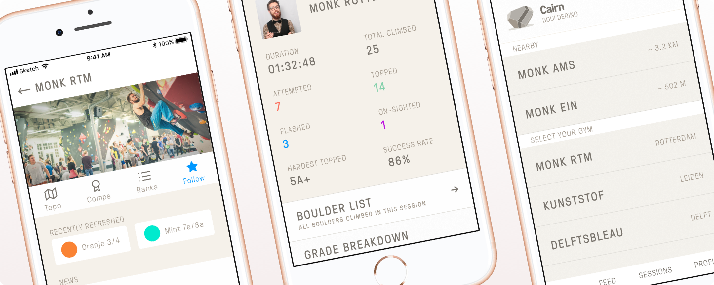

Eypo for iOS
Design & UX / Swift / Sinatra (Ruby)
Eypo is a mobile application that provide users with insights in their monthly expenses. It connects to your bank, downloads all recent transactions and categorizes them using a learning classification algorithm.
For this application I currently develop both the back-end and front-end, as well as all the mobile and web design.
Eypo is currently in beta testing for users of Bunq bank.
Visit project

Cairn Climbing App
2018, React Native / Ruby on Rails / GraphQL / Design & UX
Together with my colleagues at Moonbase, we developed a mobile application for climbers and boulderers. This application allowed users to log their climbing sessions, see which routes they climbed and how long they climbed.
Cairn Climbing provided users with analytics, giving insights in their climbing skill and progression. It also featured a social feed where they could follow other climbers, see their friends’ climbing activity, and participate in social competitions.
I worked on the Ruby back-end, React Native app, the GraphQL API, as well as the design and UX.
Feelme.com
2016 - 2017, Project management / Ruby / HTML CSS / AWS / Websockets / and more...
Feelme.com is a video platform that uses websockets to communicate to a mobile companion app to synchronize video with hardware devices
Feelme was multiyear project that consisted of many different development disciplines. It includes a Ruby on Rails backend and admin panel, a (VR) video uploading/transcoding/playback system, background job processing infrastructure, caching, CDNs, user subcription systems, connections to payment gateways and much more. .
My responsibilities included all the back-end development, database design, third party API connections, and general project management.
Visit project

Scale
Design / Swift / Bluetooth Low Energy
A small utility application that connects to your smart bluetooth scale. It will show the measurements made by the scale, without requiring any account or saving and sharing any data. It supports saving all measurements to Apple Health.
I initially wrote this application for private use because I didn't like that the official Medisana app requires you to store all your personal data on their servers.
Visit project
Spine
2014 - 2018, Swift
Spine is a Swift library for working with APIs that adhere to the jsonapi.org standard. It supports mapping to custom model classes, fetching, advanced querying, linking and persisting.
After contributing to the JSON:API project, I built a Swift client library that interfaces with JSON:API Apis. Although I do not use and maintain this library anymore, it is still maintained by a small community on GitHub.
Visit project
Popapeek
2014 - 2016, Swift / Objective-C / Ember.js / JSON:API / Ruby on Rails / AWS
Popapeek is a platform where hotel guests can leave video reviews, offering a better alternative to written reviews, and bringing customers and brands closer together.
I worked on UX and development of the iOS app in Swift and Obj-C, the admin-panel in Ember.js, and a Ruby back-end that contained a REST API and a full video transcoding system. I also managed sysops, working with Heroku and Amazon Web Services.